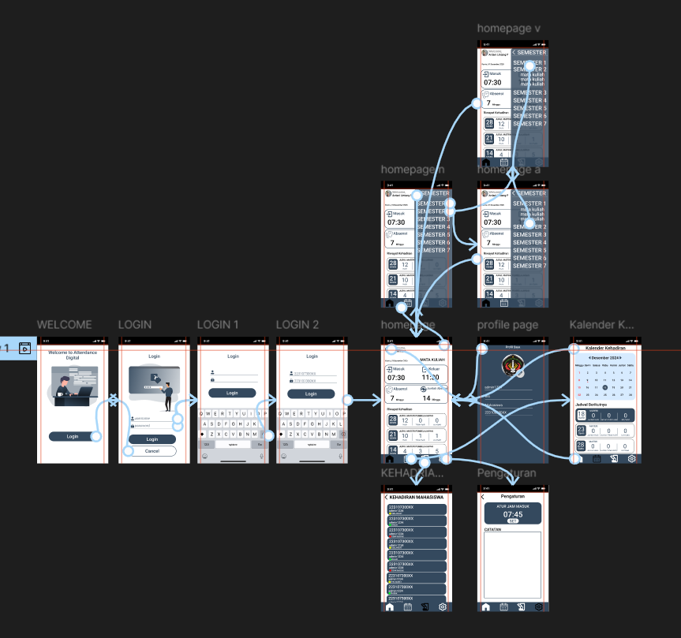

UI/UX Attendance Digital System

Project Overview
Attendance Digital is an IoT-based attendance management system that utilizes RFID technology to automate attendance recording and monitoring processes. The system was designed to improve efficiency, reduce manual data entry, and provide real-time attendance tracking through a user-friendly interface. By integrating RFID hardware with a digital platform, the system enables users to record attendance quickly and accurately while providing administrators with easy access to attendance data and reports.
My Contribution
During this project, I contributed to both the design and development phases of the system. My responsibilities included:
• Designing the user interface and user experience using Figma.
• Creating user flows and application navigation structures.
• Developing frontend components and interface layouts.
• Assisting in the integration of system features with the attendance workflow.
• Collaborating with team members throughout the development process.
Challanges & Solutions
One of the main challenges was designing a seamless interaction between RFID-based attendance recording and the web interface. The system needed to present attendance information clearly while maintaining a simple and efficient user experience for both students and administrators. To address these challenges, a structured user flow and clear information hierarchy were implemented. Dashboard components were organized to improve readability, while navigation elements were simplified to help users access attendance information with minimal effort.
Key Features
• RFID-bassed attendace recording.
• Real-time attendance monitoring.
• Attendance history management.
• Calendar-based attendance tracking.
• User profile managemen.
• Responsive and user-friendly interface
Project Documentation


